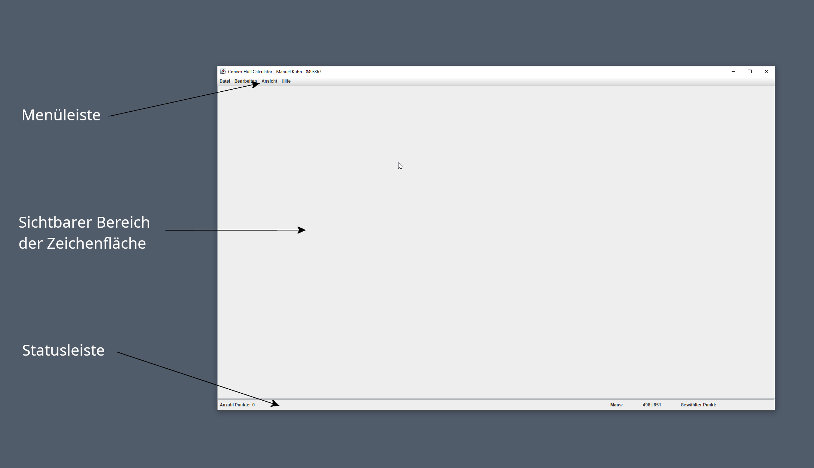
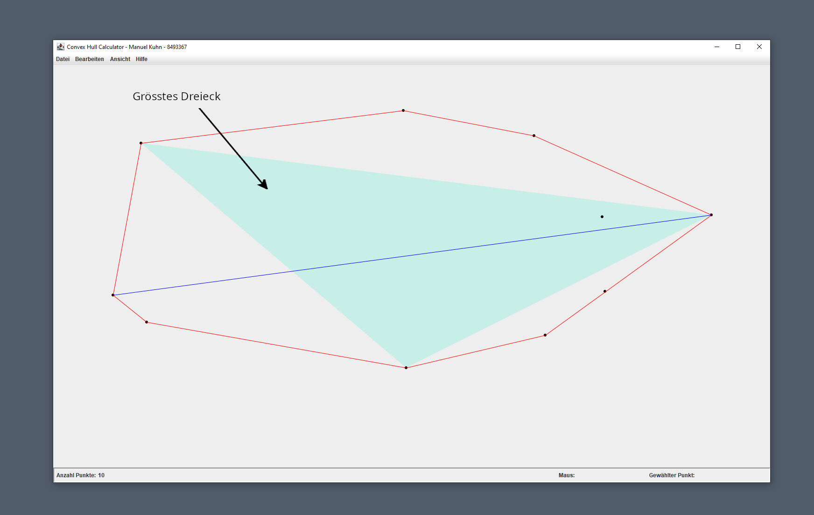
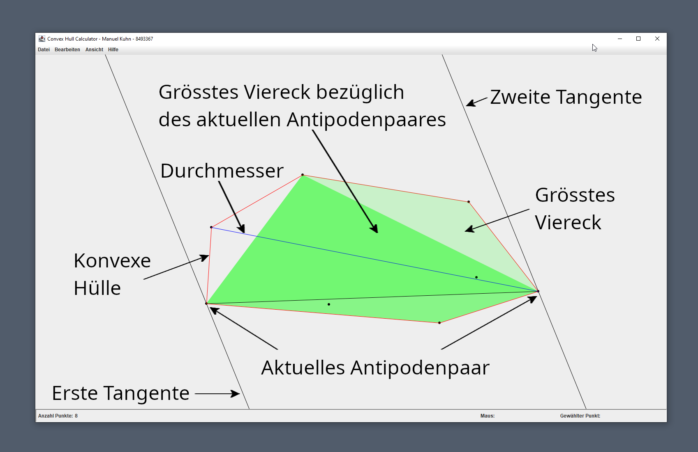

Dieses Programm berechnet die konvexe Hülle einer Menge von Punkten. Punkte können aus einer Datei geladen werden, durch eine Zufallsfunktion erzeugt, oder von Hand auf der grafischen Benutzeroberfläche eingetragen werden. Die Punktemenge bzw. die Funktionen zum Bearbeiten der Punktmenge und das Einlesen von Dateien sind so ausgelegt, dass die Punktmenge immer nur aus Punkten mit verschiedenen Koordinaten bestehen kann. Punkte der Punktmenge haben also im beliebigen paarweisen Vergleich immer verschiedene Koordinaten. Neben der konvexen Hülle kann das Programm den Durchmesser, das grösste Viereck der Punktmenge, das grösste Dreieck und eine Animation von einem Tangentenpaar anzeigen. Das Programm verfügt über eine Undo- und Redo-Funktion. Die grafische Benutzeroberfläche bietet die Möglichkeit, die Darstellung zu zentrieren, zu verschieben und durch einen Zoom zu vergrössern bzw. zu verkleinern.
Die grafische Benutzeroberfläche besteht aus der Menüleiste, der Zeichenfläche und der Statusleiste, so wie in der Abbildung dargestellt. 
Die Zeichenfläche stellt die Punktmenge, die konvexe Hülle, den Durchmesser und das grösste Viereck dar. Sie dient ebenfalls zur Bearbeitung der Punktmenge durch Benutzereingaben.
Punkte werden schwarz gefüllte Kreise dargestellt.
Die konvexe Hülle erscheint als ein rotes, konvexes Polygon. Konkret werden zwei Punkte der konvexen Hülle durch eine rote Gerade verbunden und alle Punkte, die durch eine rote Gerade verbunden sind, gehören zur konvexen Hülle. Die Konvexe Hülle kann aus nur einem Punkt oder einer Geraden bestehen, falls die entsprechende Punktmenge nur aus einem bzw. aus zwei Punkten besteht.
Der Durchmesser wird durch eine blaue Gerade angezeigt. Er kann auch nur als Punkt dargestellt werden, falls die Punktmenge nur einen Punkt enthält.
Das grösste Viereck wird in einem matten grün dargestellt. Es kann auch nur als Punkt dargestellt werden, falls alle vier Punkte des Vierecks die gleichen Koordinaten haben. Dieser Fall tritt ein, falls die Punkmenge nur einen Punkt enthält. Es kann als Gerade dargestellt sein, falls jeweils zwei verschiedene Paare von Punkten die gleichen Koordinaten haben und es kann als Dreieck erscheinen, falls genau ein paar von Punkten des Vierecks die gleichen Koordinaten besitzt.
Das grösste Dreieck wird in einem hellen blau dargestellt. Wie beim grössten Viereck kann es auch aus einem Punkt bestehen, falls alle drei Punkte die gleichen Koordinaten haben. Es kann aus einer Geraden bestehen, falls genau zwei Punkte die gleichen Koordinaten haben. 
Während die Animation läuft, werden die beiden Punkte des Antipodenpaares durch eine schwarze Gerade verbunden. Die an den Punkten des Antipodenpaares anliegenden Tangenten werden schwarz dargestellt. Das zum jeweiligen Antipodenpaar gehörende grösste Viereck wird in einem kräftigen grün eingezeichnet. 
Bewegen Sie den Mauszeiger auf der Zeichenfläche an die gewünschte Stelle. In der Statusleiste werden nach dem Label mit der Anschrift “Maus:” die Koordinaten des Mauszeigers angezeigt. Sie können den Bereich, in welchen Sie einen Punkt eintragen können, durch verschieben oder Zoomen verändern. Um den Punkt einzutragen, drücken Sie die linke Maustaste.
Wählen Sie den Punkt, indem Sie den Mauszeiger auf bzw. in die Nähe des zu löschenden Punktes bewegen. Sobald der Punkt gewählt ist, wird er von einem schwarzen Quadrat, welches den Punkt umgibt, markiert. Die Koordinaten des gewählten Punktes werden in der Statusleiste nach dem Label “Gewählter Punkt:” angezeigt. Drücken Sie nun die rechte Maustaste, um den Punkt zu löschen.
Bewegen Sie den Mauszeiger auf bzw. in die Nähe des Punktes, welchen
Sie verschieben möchten. Sobald der Punkt gewählt ist, wird er von einem
schwarzen Quadrat, welches den Punkt umgibt, markiert. Drücken Sie nun
Alt und die linke Maustaste in dieser Reihenfolge. Nun
können Sie den gewählten Punkt verschieben. Bewegen Sie den Punkt an die
gewünschte Stelle und lassen Sie dann die Taste Alt und die
linke Maustaste los (die Reihenfolge spielt keine Rolle). Die
Koordinaten des gewählten Punktes werden vor und während dem Verschieben
in der Statusleiste nach dem Label “Gewählter Punkt:” angezeigt.
Befindet sich an der Stelle, auf welche der gewählte Punkt verschoben
wird, schon ein anderer Punkt, so wird dieser Punkt gelöscht. Die Anzahl
der Punkte - angezeigt nach dem Label “Anzahl Punkte:” - reduziert sich
dann um 1. Wird der Befehl rückgängig gemacht, so wird der
verschobene Punkt wieder an seinem ursprünglichen Ort eingetragen und
ein allfälliger gelöschter Punkt wird wieder hinzugefügt.
Drücken Sie Ctrl und die linke Maustaste in dieser
Reihenfolge. Nun können Sie die Zeichenfläche durch Bewegen der Maus
verschieben.
Drücken Sie Ctrl. Nun können Sie durch Drehen des
Mausrades je nach Drehrichtung hinein- bzw. hinauszoomen.
Wählen Sie Datei → Neu. Falls Änderungen an der Punktmenge vorgenommen wurden, werden Sie zuvor gefragt, ob die bestehende Punktmenge in einer Datei gespeichert werden soll.
Wählen Sie Datei → Öffnen. Nun können Sie die gewünschte Datei auswählen und öffnen. Falls Änderungen an der Punktmenge vorgenommen wurden, werden Sie zuvor gefragt, ob die bestehende Punktmenge in einer Datei gespeichert werden soll. Die Punktmenge der Datei wird nach dem öffnen zentriert dargestellt, falls es intern nicht zu einem Überlauf kommen kann. Ansonsten wird die Punktmenge nicht zentriert dargestellt.
Falls Sie die Punktmenge in einer neuen Datei speichern möchten, wählen Sie Datei → Speichern unter. Nun können Sie einen Dateinamen eingeben und die Punktmenge unter diesem Dateinamen in einer Datei ablegen. Wählen Sie Datei → Speichern, falls Sie zuvor die Punktmenge mit Datei → Öffnen geladen haben und die geänderte Punktmenge in der schon geöffneten Datei abgespeichert werden soll.
Wählen Sie Datei → Beenden. Das Programm wird beendet. Falls Änderungen an der Punktmenge vorgenommen wurden, werden Sie zuvor gefragt, ob die bestehende Punktmenge in einer Datei gespeichert werden soll. Sie können das Programm ebenfalls beenden, indem Sie auf das Kreuz in der oberen rechten Ecke des Hauptfensters klicken.
Wählen Sie Bearbeiten → Rückgängig. Der entsprechende Menü-Eintrag wird matt dargestellt, falls es keine Befehle gibt, die rückgängig gemacht werden können.
Wählen Sie Bearbeiten → Wiederherstellen. Der entsprechende Menü-Eintrag wird matt dargestellt, falls es keine Befehle gibt, die wiederhergestellt werden können.
Sie können 10, 50, 100, 500 oder 1000 Punkte mit Hilfe einer Zufallsfunktion erzeugen. Diese Funktion sorgt dafür, dass die Punkte in den sichtbaren Bereich der Zeichenfläche eingetragen werden. Wählen Sie dazu im Menü Bearbeiten den entsprechenden Eintrag. Falls es der sichtbare Bereich der Zeichenfläche nicht zulässt, dass eine gewisse Anzahl an zufällig erzeugten Punkten eingetragen wird weil er zu klein ist oder weil sich dort schon zu viele Punkte befinden, so wird der Befehl ignoriert.
Setzen Sie das Häkchen bei Ansicht → Konturpolygon.
Setzen Sie das Häkchen bei Ansicht → Durchmesser.
Setzen Sie das Häkchen bei Ansicht → Grösstes Viereck.
Setzen Sie das Häkchen bei Ansicht → Grösstes Dreieck.
Setzen Sie das Häkchen bei Ansicht → Animation.
Wählen Sie Ansicht -> Zentrieren. Die Darstellung wird nur zentriert, falls es intern nicht zu einem Überlauf kommen kann.
Wählen Sie Hilfe → Anleitung. Die Bedienungsanleitung wird im Webbrowser angezeigt.
Hinter dem Label “Anzahl Punkte:” wird die Anzahl der Punkte in der Punktmenge angezeigt.
Falls sich der Mauszeiger über dem sichtbaren Bereich der Zeichenfläche befindet, werden seine Koordinaten nach dem Label “Maus:” angezeigt. Die x- und die y-Koordinate sind durch einen vertikalen Strich getrennt.
Befindet sich ein oder befinden sich mehrere Punkte innerhalb einer gewissen Distanz zum Mauszeiger, so wird der zum Mauszeiger nächstgelegene Punkt ausgewählt. Die Koordinaten des ausgewählten Punktes werden nach dem Label “Gewählter Punkt:” angezeigt. Die x- und die y-Koordinate sind durch einen vertikalen Strich getrennt. Der gewählte Punkt selber wird durch ein ihn umgebendes schwarzes Quadrat markiert.